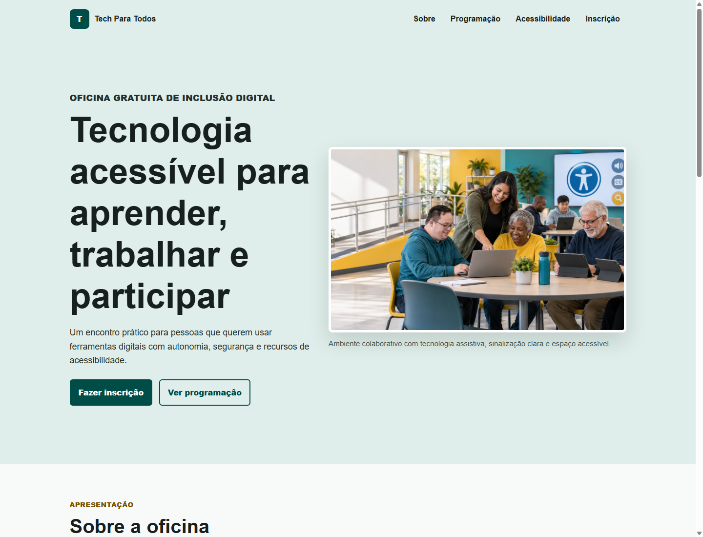

Tutorial: Página Web Acessível
Projeto: Tech Para Todos - Oficina de Inclusão Digital
Tema: evento educativo gratuito sobre tecnologia, autonomia digital e acessibilidade.
1. Apresentação do projeto
O projeto desenvolvido foi uma página web chamada Tech Para Todos. A proposta da página é divulgar uma oficina gratuita de inclusão digital para pessoas interessadas em aprender recursos básicos de tecnologia, navegação segura e ferramentas de acessibilidade.
O tema foi escolhido porque combina diretamente com a proposta da atividade: construir uma página compreensível, bem organizada e acessível para diferentes perfis de usuários.
2. Organização dos arquivos
Os arquivos foram organizados em uma pasta própria chamada atividade-acessibilidade.
index.html: arquivo principal da página.styles.css: folha de estilos usada para cores, layout, foco e responsividade.assets/oficina-inclusao-digital.png: imagem principal da página com texto alternativo.screenshots/desktop.png: captura da página em tela grande.docs/tutorial.html: documento do tutorial em formato HTML para impressão.docs/tutorial-tech-para-todos.pdf: versão final em PDF para entrega.
3. Estrutura principal do HTML
A página começa com <!doctype html> e usa
<html lang="pt-BR">. O atributo lang informa
que o conteúdo está em português do Brasil, ajudando leitores de tela e navegadores.
<!doctype html>
<html lang="pt-BR">
<head>
<meta charset="utf-8">
<meta name="viewport" content="width=device-width, initial-scale=1">
<title>Tech Para Todos | Oficina de Inclusão Digital</title>
</head>
</html>
A tag <meta name="viewport"> foi utilizada para permitir que
o layout se adapte a celulares e tablets. Isso contribui para a acessibilidade
porque evita zoom desnecessário e melhora a leitura em telas menores.
4. Tags semânticas utilizadas
O HTML semântico foi usado para dar significado às partes da página. Em vez de
usar apenas <div>, cada área recebeu uma tag apropriada.
<body>
<a class="skip-link" href="#conteudo-principal">Pular para o conteúdo principal</a>
<header class="site-header" id="inicio">
<nav class="navbar" aria-label="Navegação principal">
<!-- nav agrupa os links principais da página -->
</nav>
</header>
<main id="conteudo-principal" tabindex="-1">
<section id="sobre" aria-labelledby="titulo-sobre"></section>
<section id="programacao" aria-labelledby="titulo-programacao"></section>
<section id="acessibilidade" aria-labelledby="titulo-acessibilidade"></section>
<section id="inscricao" aria-labelledby="titulo-inscricao"></section>
</main>
<footer class="site-footer"></footer>
</body><header>: identifica o cabeçalho da página e apresenta o projeto.<nav>: agrupa os links de navegação, facilitando o uso por leitores de tela.<main>: marca o conteúdo principal, ajudando o usuário a localizar a parte central da página.<section>: divide o conteúdo em blocos temáticos.<article>: usado em blocos independentes, como cards de informação.<aside>: usado para informações complementares, como dados rápidos do evento.<figure>e<figcaption>: relacionam a imagem com uma legenda.<footer>: apresenta informações finais e link para voltar ao início.
5. Hierarquia dos títulos
A página possui apenas um <h1>, que representa o título principal.
As seções usam <h2>, e os subtítulos internos usam
<h3>. Essa ordem ajuda pessoas que navegam por títulos em
leitores de tela.
<h1>Tecnologia acessível para aprender, trabalhar e participar</h1>
<section id="sobre" aria-labelledby="titulo-sobre">
<h2 id="titulo-sobre">Sobre a oficina</h2>
<article>
<h3>Objetivo</h3>
</article>
</section>6. Imagem com texto alternativo
A imagem principal foi inserida com <img> dentro de
<figure>. O atributo alt descreve o conteúdo
essencial da imagem para pessoas que usam leitor de tela ou para casos em que a
imagem não carrega.
<figure class="hero-media">
<img
src="assets/oficina-inclusao-digital.png"
alt="Grupo diverso de pessoas aprendendo a usar computadores e tablets em uma sala acessível."
>
<figcaption>
Ambiente colaborativo com tecnologia assistiva, sinalização clara e espaço acessível.
</figcaption>
</figure>
A tag <figure> foi escolhida porque a imagem tem valor
informativo dentro da página. A legenda complementa a descrição visual.
7. Lista de informações
A lista de dados rápidos foi criada com <ul> e
<li>. Listas ajudam na leitura porque agrupam informações
relacionadas de forma objetiva.
<aside class="notice" aria-labelledby="titulo-dados">
<h3 id="titulo-dados">Informações rápidas</h3>
<ul>
<li>Data: 21 de setembro de 2026</li>
<li>Horário: das 14h às 17h</li>
<li>Local: Laboratório de Informática do IFSP</li>
<li>Vagas: 30 participantes</li>
</ul>
</aside>8. Construção do formulário acessível
O formulário usa <form>, <label>,
<fieldset>, <legend>, campos de entrada e
um <button>. Cada campo possui um rótulo associado pelo par
for e id.
<form action="#" method="post" aria-describedby="ajuda-formulario">
<p id="ajuda-formulario" class="form-help">
Este formulário é demonstrativo e não envia dados para um servidor.
</p>
<div class="field">
<label for="nome">Nome completo (obrigatório)</label>
<input type="text" id="nome" name="nome" autocomplete="name" required>
</div>
<fieldset>
<legend>Necessita de recurso de acessibilidade?</legend>
<input type="radio" id="recurso-sim" name="recurso" value="sim">
<label for="recurso-sim">Sim</label>
</fieldset>
<button class="button primary" type="submit">Enviar inscrição</button>
</form>
O <fieldset> agrupa as opções de radio e o
<legend> explica o assunto do grupo. O botão possui texto claro,
indicando exatamente a ação: enviar a inscrição.
9. Desenvolvimento do CSS
O CSS foi criado com variáveis de cor, layout responsivo, botões reutilizáveis e estilos de foco. As cores usam contraste forte entre texto e fundo.
:root {
--text: #17201f;
--primary-dark: #004c47;
--focus: #ffbf00;
}
body {
background: #f7faf9;
color: var(--text);
font-family: Arial, Helvetica, sans-serif;
line-height: 1.6;
}
a:focus-visible,
button:focus-visible,
input:focus-visible,
select:focus-visible,
textarea:focus-visible {
outline: 4px solid var(--focus);
outline-offset: 4px;
}
O seletor :focus-visible foi escolhido para mostrar claramente qual
elemento está ativo durante a navegação por teclado. Isso melhora o uso da página
para pessoas que não utilizam mouse.
10. Recursos de acessibilidade implementados
- Idioma definido com
lang="pt-BR". - Uso de HTML semântico.
- Hierarquia correta de títulos.
- Imagem com atributo
alt. - Legenda associada à imagem com
<figcaption>. - Links com textos descritivos.
- Botões com ações claras.
- Labels associados aos campos do formulário.
- Agrupamento de opções com
<fieldset>e<legend>. - Campos obrigatórios indicados no rótulo.
- Contraste adequado entre texto e fundo.
- Destaque visual de foco com
:focus-visible. - Link para pular diretamente ao conteúdo principal.
- Layout responsivo para tela grande e telas menores.
11. Testes de acessibilidade realizados
Foram realizados testes manuais durante o desenvolvimento:
- Navegação por teclado usando a tecla Tab para verificar se links, botões e campos do formulário recebem foco.
- Teste do link "Pular para o conteúdo principal", que aparece quando recebe foco.
-
Conferência da hierarquia dos títulos, mantendo um único
<h1>e seções com<h2>. - Verificação do texto alternativo da imagem principal.
-
Conferência dos campos do formulário para garantir associação entre
<label>e os respectivosid. - Captura da página em desktop para observar a organização visual e possíveis problemas de sobreposição.
Resultado: a página permite navegação por teclado, apresenta foco visível, possui estrutura semântica clara e mantém boa leitura em tamanhos diferentes de tela.
12. Captura de tela da página

13. Conclusão
A principal dificuldade foi equilibrar design visual, responsividade e acessibilidade. Foi necessário ajustar tamanhos, espaçamentos e foco para que a página funcionasse bem com mouse, teclado e telas menores.
O principal aprendizado foi perceber que acessibilidade não é apenas adicionar atributos, mas organizar o conteúdo com significado, escrever textos claros, associar rótulos aos campos e garantir que todas as pessoas consigam navegar e compreender a página.